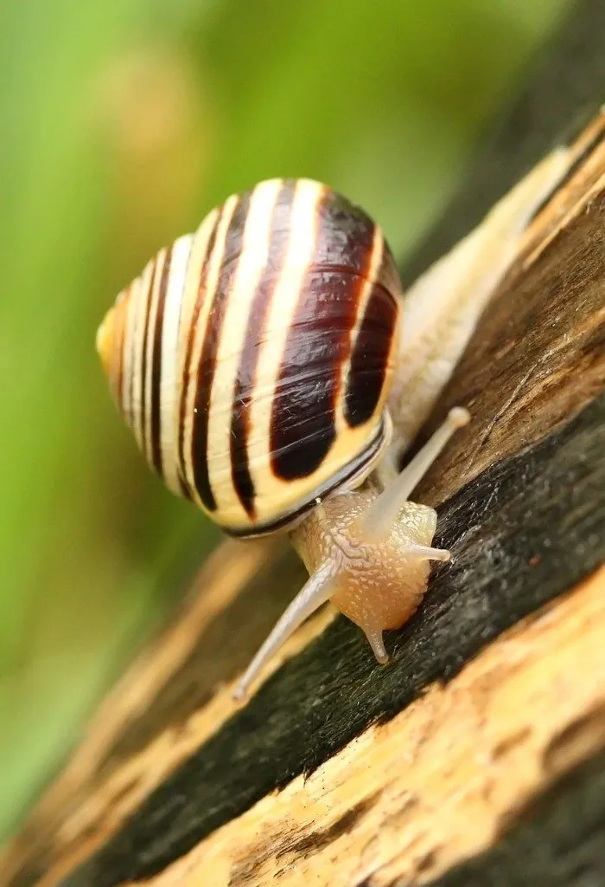

软体动物 · 动物界
森林葱蜗牛 Cepaea nemoralis

欧洲林地中常见的陆生蜗牛，壳色和条纹变化极其丰富，是研究遗传多态性和自然选择的经典材料，也是常见的花园访客。
- 分类
- 门软体动物门纲腹足纲目柄眼目科大蜗牛科属葱蜗牛属
- 栖息环境
- 欧洲的林地、灌丛、草地和花园，喜潮湿阴暗的环境
- 地理分布
- 欧洲各地，并被引入北美等地，常见于林地和花园
- 保护级别
- 暂无评估
物种志
森林葱蜗牛的贝壳呈球形，壳高一般 1.5–2.5 cm。它的壳色变化极大，有黄色、粉红、橙色和褐色等，壳面常有 1–5 条深色螺旋带，也有完全无带的个体。这种丰富的花纹变化是遗传多态性的典型例子，同一片林地中往往能看到多种不同的类型。
森林葱蜗牛分布于欧洲的林地、灌丛、草地和花园，也被引入北美等地。它喜欢潮湿环境，雨后活动频繁，以腐烂的植物、藻类、真菌和嫩叶为食，是生态系统中的分解者之一。它雌雄同体，异体交配，把卵产在潮湿的土壤中。森林葱蜗牛的壳色和条纹多态性受基因控制，不同环境中的比例不同，科学家用它研究自然选择和鸟类捕食的影响，它是进化生物学的经典研究对象。目前它没有IUCN 的正式评估，中国未将其列入国家重点保护野生动物名录。
形态与习性
- 食性以腐烂植物、藻类、真菌和嫩叶为食
- 壳高一般 1.5–2.5 cm
- 花纹多态性壳色有黄、粉、橙、褐等，螺旋带数量 1–5 条或无带
- 栖息地林地、灌丛、草地和花园，喜潮湿环境
- 繁殖雌雄同体，异体交配，卵产在潮湿土壤中
- 科研价值研究遗传多态性和自然选择的经典材料
趣味知识
- 森林葱蜗牛的壳色有黄、粉、橙、褐等多种，条纹数量也各不相同。
- 它的壳色多态性被用来研究自然选择，是进化生物学的经典案例。
- 蜗牛是雌雄同体，两只蜗牛交配后都能产卵。